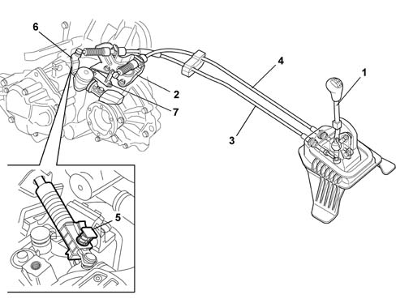

Introduction - MANUAL GEARBOX EXTERNAL CONTROLS
- Path
- Descriptions > 21 GEARBOX > 2125 MANUAL GEARBOX EXTERNAL CONTROLS > Introduction - MANUAL GEARBOX EXTERNAL CONTROLS
- Kind
- system description
- Applies to
- engines: 1.2 8v, 1.2 16v, 1.4 16v; all production periods
- Interactive page
- https://sloeber94.github.io/elrnDB-lYpsln/en/#/2429845
Applies to: engines: 1.2 8v, 1.2 16v, 1.4 16v; all production periods
The solution adopted with bowden cables makes it possible to:
- eliminate the vibrations transmitted by the engine to the gear lever
- improve the manoeuvrability of the gearbox by reducing the fitting clearances;
- improve the layout of the components and accessories in the engine compartment for the best possible positioning of the cables in relation to the rods.
One of the flexible cables is used for gear selection and the other for gear engagement.

1, Gearbox control lever 2, Support for gear selector and engagement cables 3, Gear engagement cable 4, Gear selector cable 5, Gear selector cable automatic adjustment device (only for gearbox C514) 6, Gear engagement lever 7, Selection lever on gearbox